Microsoft Intune Remote Help is not a brand-new tool. It has been around for a few years as a standalone add-on and as part of the Intune Suite. What is new is that Microsoft is adding the advanced Intune Suite capabilities to Microsoft 365 E3 and E5, and the rollout started in July 2026. That means a large number of organizations suddenly have an enterprise-grade remote support solution included in licenses they already pay for – and many of them are still paying extra for third-party remote control tools sitting outside their managed environment.
You have Remote Help already. You might as well use it. In this post, I will take a structured deep dive based on my implementation experiences: the background, enabling the service, distributing the app using the Enterprise App Catalog (also now included in E5), securing the service with RBAC and Conditional Access, the different ways to connect, handling UAC elevation in admin mode, monitoring usage, and troubleshooting.
Background
What Is Remote Help?
Microsoft Intune Remote Help is a cloud-based remote support solution that allows IT support teams to connect securely to an end-user’s device for real-time assistance. Remote Help distinguishes between helpers (support personnel) and sharers (end users sharing their screen). Both parties must sign in with a Microsoft Entra ID account from your organization for every session.
This organizational sign-in requirement is the core of the security model. It means:
- No impersonation. Before a session starts, both parties see each other’s organizational profile: name, job title, company, profile picture, and verified domain. The user knows it really is IT calling.
- Same-tenant only. Helpers cannot assist users in another tenant or external organization. This is a limitation for MSP scenarios, but a feature for privacy and GDPR-conscious European organizations.
- Zero Trust enforcement. Every session is authenticated through Entra ID and can be protected with Conditional Access.
Compared to the built-in Quick Assist, Remote Help adds RBAC-scoped permissions, Entra ID authentication, compliance warnings on non-compliant devices, UAC elevation visibility for the helper, session reporting, and full Intune integration.
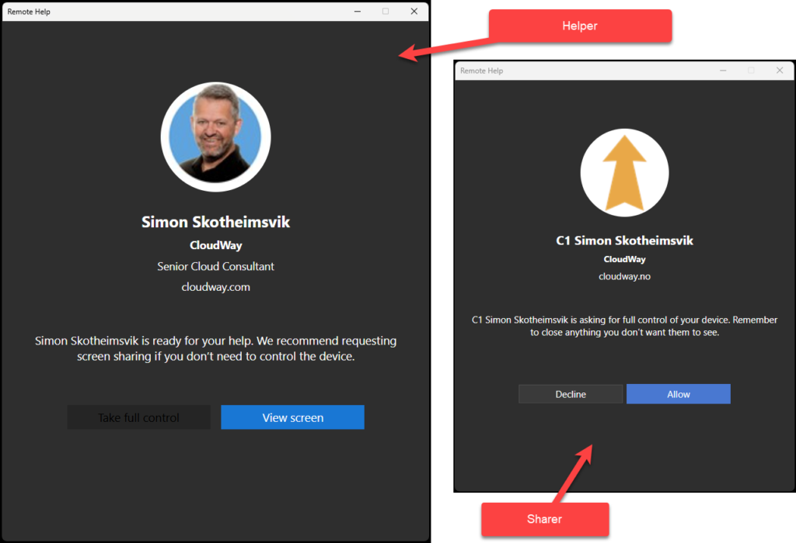
Licensing – What Changed?
Remote Help has historically been available in two ways:
- As a standalone per-user add-on to Microsoft Intune
- As part of the Microsoft Intune Suite add-on
With the announcement of advanced Intune solutions coming to Microsoft 365 E3 and E5, Remote Help is included in EMS E3 and thereby Microsoft 365 E3 and E5, with the rollout starting July 2026. Note that it may take some time before the capability lights up in your tenant.
A few important licensing details from my implementations:
- A Remote Help license must be assigned to every user who interacts with the service – both helpers and sharers. This is not a helper-only license.
- License assignment is best handled through a licensing group, which you can then reuse when scoping the Intune RBAC role assignment (more on that later).
- If you want to test before the licenses hit your tenant, a trial can be requested from Tenant administration > Intune add-ons in the Intune admin center, which redirects you to the Microsoft 365 admin center for a 90-day / 250-license trial.
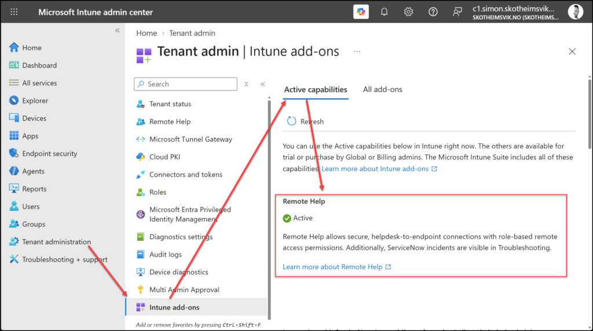
Session Modes and Platform Support
Remote Help supports four session modes. Availability depends on the platform combination between helper and sharer:
| Mode | Description |
|---|---|
| View only | Helper sees the sharer’s screen without interacting. Recommended default to minimize privacy impact. |
| Full control | Helper interacts with the sharer’s device. Requires explicit acceptance from the sharer. |
| Elevation | Helper responds to UAC prompts on Windows with elevated credentials, without the user needing admin rights. |
| Unattended | Helper connects to an Android Enterprise dedicated device without a sharer present. |
Platform support in short:
- Windows (native app): Windows 10 (19042+), Windows 11, Windows 365, Azure Virtual Desktop. x86, x64, and ARM64. Full feature set including elevation and Remote Launch from the Intune portal.
- macOS (native app): macOS 13 and later. View-only and full control, Conditional Access support, in-session chat.
- Android (native app): Scoped to Android Enterprise dedicated devices only (Samsung Knox and Zebra). Supports unattended access – great for kiosk fleets.
- Web app: A browser-based fallback for sharers who can’t install the native client. Provides view-only capability to the helper.
Note that a Windows native helper app can only assist Windows native sharers. All cross-platform sessions (macOS and Android sharers) require the helper to use the web app at https://aka.ms/rhh.
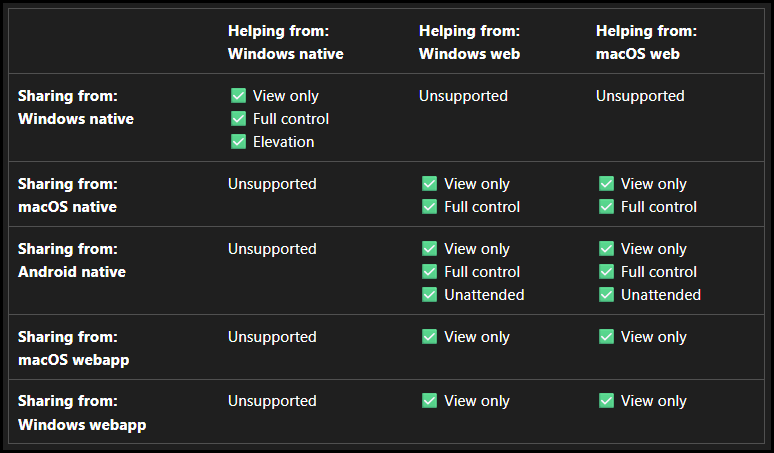
Unattended Access Is Coming to Windows
Today, the Unattended mode is exclusive to Android Enterprise dedicated devices. That is about to change: Unattended Remote Help for Windows is in preview and tracked on the Microsoft 365 Roadmap as feature ID 499154 – “Remotely access devices over the cloud without requiring end user involvement by signing in with credentials” – with general availability currently targeting Q3 2026 (August 2026 at the time of writing; the date has moved a few times, so check the roadmap entry for the latest).
This was a hot topic in a recent Workplace Ninjas Denmark user group session, where Per Larsen from Microsoft clarified some important design decisions that set expectations for what Windows unattended access is – and what it is not:
- You will not take over the signed-in user’s session. Unattended access to a Windows device where a user is signed in means the helper signs in with their own administrative credentials (for example, retrieved through Windows LAPS) – and the currently signed-in user is signed out.
- The primary scenario is user-less devices. Think kiosks, digital signage, and shared screens at banks and airports – the same scenario the Android unattended mode covers today. It is a remote sign-in capability, not a session-shadowing capability.
- No commitment to change this behavior. If you are hoping for a silent take-over of an active user session like some third-party tools offer, Microsoft has stated there is no commitment to change this design.
So plan accordingly: for attended support on Windows, the consent-based session flows remain the model. Unattended Windows access will fill the kiosk/no-user gap – not replace your existing remote support flow for end users.
Prerequisites
Before rolling out Remote Help, make sure the following is in place:
- A valid Remote Help license (add-on, Intune Suite, or M365 E3/E5) assigned to all helpers and sharers
- Microsoft Intune Plan 1 subscription (or higher)
- Devices registered with Microsoft Entra ID
- Remote Help explicitly enabled in the Intune admin center – it is off by default
- Helpers and sharers in the same Entra ID tenant
Network Requirements
Remote Help communicates over HTTPS on port 443, using RDP as the underlying transport. Traffic is encrypted with TLS 1.2, and both helper and sharer connect outbound to Microsoft’s Remote Assistance Service at https://remotehelp.microsoft.com – so no inbound firewall openings or direct connectivity between the devices are needed. (source)
Both helpers and sharers need outbound access to the Remote Help endpoints. The full list is documented at Network endpoints for Remote Help, and includes endpoints like *.support.services.microsoft.com, *.remoteassistanceprodacs.communication.azure.com (Azure Communication Services for chat), and the standard Entra ID login endpoints.
💡 If your organization uses SSL inspection on a proxy, add the Remote Help domains to the inspection bypass list. SSL inspection breaking the TLS handshake is one of the most common causes of failed connections I’ve seen.
Enable Remote Help in the Tenant
Remote Help is disabled by default and must be enabled tenant-wide. This is a two-minute job:
- Sign in to the Microsoft Intune admin center and navigate to Tenant administration > Remote Help.
- On the Settings tab, select Configure:
- Set Enable Remote Help to Enabled.
- Set Allow Remote Help to unenrolled devices to Enabled if you want to support devices not enrolled in Intune (disabled by default – note that auditing is limited for unenrolled devices).
- Set Disable chat to Yes if you want to remove the in-session chat (chat is enabled by default).
- Select Save.
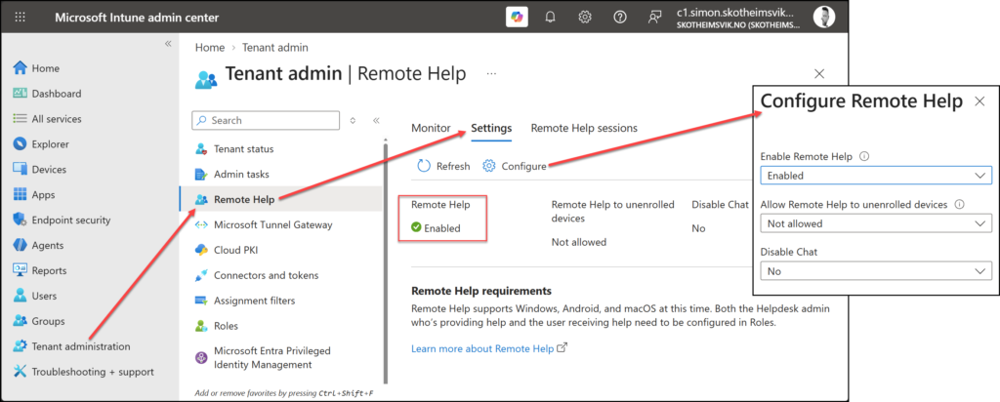
💡 New or trial licenses can take anywhere from 30 minutes to 8 hours to become active. New sessions might report that Remote Help isn’t enabled for the tenant even after you have flipped the switch. Be patient before you start troubleshooting.
Distribute the Remote Help App
The Remote Help app must be installed on both the helper’s device and every device where support will be offered. The app is lightweight (under 8 MB) and can be downloaded manually from https://aka.ms/downloadremotehelp – but manual installs requiring local admin rights are not sustainable at scale. Let’s do this properly.
Enterprise App Catalog (The E5 Way)
Here is the beautiful part of the new licensing story: Enterprise App Management – another Intune Suite capability – is also coming to your Microsoft 365 E5 license. The Enterprise App Catalog is a collection of prepackaged, Microsoft-hosted Win32 apps, and Remote Help is available in the catalog. No downloading, no packaging, no IntuneWin wrapping, no detection-rule guesswork.
- In the Intune admin center, navigate to Apps > All apps > Create.
- Select the app type Enterprise App Catalog app.
- Search the catalog for Remote Help, select it, and choose the version (or take the latest).
- Review the prefilled installation experience, detection rules, and update settings.
- Assign the app as Required to a device group covering your Windows estate – Remote Help is applicable when targeting device groups, not user groups.
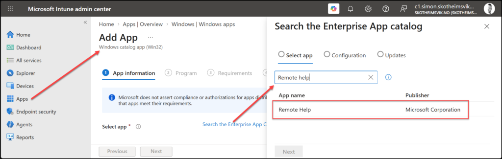
The Enterprise App Catalog also handles the update story for you. Remote Help self-updates by default via Microsoft Update if configured, but with catalog apps you can enforce and monitor updated versions centrally. To learn more, see Add an Enterprise App Catalog app to Microsoft Intune.
💡 Tools like Patch My PC also carry Remote Help in their catalogs if you’re already invested in a third-party packaging pipeline.
Alternative: Win32 App Deployment
If the Enterprise App Catalog hasn’t lit up in your tenant yet, the classic Win32 approach works fine. Download the installer, wrap remotehelpinstaller.exe as a .intunewin file, and use the following parameters:
| Setting | Value |
|---|---|
| Install command | remotehelpinstaller.exe /quiet acceptTerms=1 enableAutoUpdates=1 |
| Uninstall command | remotehelpinstaller.exe /uninstall /quiet acceptTerms=1 |
| Detection rule type | File |
| Path | C:\Program Files\Remote Help |
| File | RemoteHelp.exe |
| Detection method | String (version), Greater than or equal to, e.g. 5.2.1037.0 |
⚠️ The command line options acceptTerms and enableAutoUpdates are case sensitive. Set enableAutoUpdates=0 if you want to control updates exclusively through your deployment pipeline.
💡 Remote Help requires the Microsoft Edge WebView2 Runtime. If it’s not present, the Remote Help installer installs it (but does not remove it at uninstall).
macOS, Android, and the Web App
- macOS: Download from https://aka.ms/downloadremotehelpmacos and deploy as an unmanaged PKG app or via Company Portal. The native app is only needed for full control – view-only sessions work through the web app. Streamline the privacy prompts (Accessibility / Screen Capture) with a settings catalog policy under Privacy Preferences Policy Control as documented in Deploy Remote Help.
- Android: Deploy the Remote Help app as Required through Managed Google Play to your Android Enterprise dedicated devices. Zebra devices need OEMConfig permission profiles; Samsung devices need Knox and the display overlay permission.
- Web app: Nothing to deploy. Sharers browse to https://aka.ms/rh, helpers to https://aka.ms/rhh.
Firewall Considerations
Depending on your environment, you may need to allow the following Remote Help executables through the Windows Firewall:
C:\Program Files\Remote help\RemoteHelp.exeC:\Program Files\Remote help\RHService.exeC:\Program Files\Remote help\RemoteHelpRDP.exe
Securing Remote Help
A remote control tool where the helper can elevate to admin is a high-value target. This is where Remote Help really shines compared to third-party alternatives – the security controls are native Entra ID and Intune constructs you already know.
RBAC – Least Privilege for Helpers
Remote Help uses Intune role-based access control to determine who can help and what they are allowed to do. The built-in Help Desk Operator role includes all required Remote Help permissions, but I always recommend creating a custom role. Poking the bear a little: Intune RBAC is totally overlooked and underused. It is time to stop handing out the Intune Administrator role when a scoped custom role does the job.
The relevant permissions live under the Remote Help app category when creating a role – but be aware that the Remote Help app permissions alone are not enough:
| Permission | Effect |
|---|---|
| Remote Help app – View screen | Helper can view the sharer’s screen |
| Remote Help app – Take full control | Helper can control the device (implicitly grants View screen) |
| Remote Help app – Elevation | Helper can respond to UAC prompts (implicitly grants Take full control and View screen) |
| Remote Help app – Unattended control | Helper can connect without sharer approval – Android dedicated devices only (implicitly grants everything) |
| Remote tasks – Offer remote assistance | Required to offer remote assistance to users |
| Remote assistance connector – Read | Required to see whether Remote Help is configured for the tenant when starting a session |
Note the dependency chain in the Remote Help app permissions – enabling a higher permission automatically grants the ones below it.
⚠️ This is where custom roles typically go wrong: according to the official RBAC documentation, a helper needs the combination of Remote Tasks – Offer remote assistance, Remote Assistance Connector – Read, and at least one Remote Help app permission. A custom role with only the Remote Help app permissions will not work. The built-in Help Desk Operator role includes all six, which is why it “just works” – replicate the full combination in your custom roles.
To create and assign a custom role:
- Navigate to Tenant administration > Roles > Create > Intune role.
- Name it something like
Remote Help - Helpdesk - View and Controland select only the Remote Help permissions the role needs. - Under Assignments, assign the role:
- Admin groups: the Entra ID group containing your helpers.
- Scope groups: the Entra ID groups containing the users/devices they are allowed to help – or All Users / All Devices.
- Scope tags: if used, the tags controlling portal visibility.
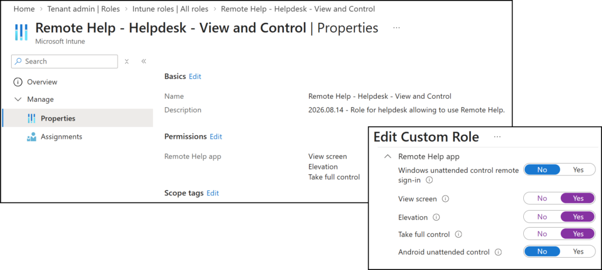
A tiered model works well in practice: one role for first-line support with View screen and Take full control, and a separate, tightly-populated role with Elevation for second-line/senior support.
If a helper without sufficient RBAC permissions attempts a session, they get a clear notification that they lack permission to provide remote assistance – the control is enforced server-side during session establishment, not just cosmetically in the portal.
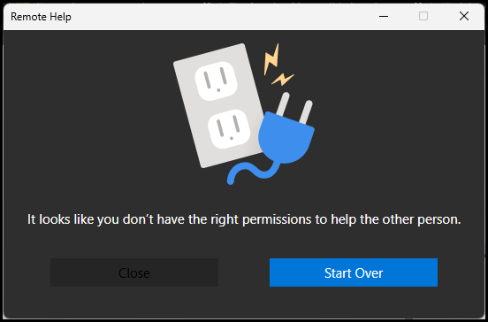
For organizations with multiple sites or support teams, combine the RBAC assignment with scope tags and scoped device groups so that helpers from Site 1 can only assist Site 1 devices. Dynamic device groups based on Autopilot group tags make this nearly zero-touch: the OEM stamps the group tag at order time, the dynamic group picks up the device, and the scope tag follows automatically. My fellow MVP Nicklas Ahlberg has an excellent security hardening post with reusable scripts for this pattern.
Conditional Access – Protecting the Helper Sign-In
Remote Help does not have a service principal in your tenant by default, so the Remote Assistance Service cannot be targeted by Conditional Access out of the box. Creating it is a one-liner with Microsoft Graph PowerShell (Check Ben’s article on changes in Connect-MgGraph if it’s been a while since your last connection):
Connect-MgGraph -Scopes "Application.ReadWrite.All" -NoWelcome New-MgServicePrincipal -AppId "1dee7b72-b80d-4e56-933d-8b6b04f9a3e2" Disconnect-MgGraph
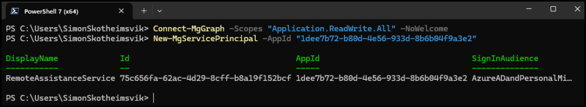
This registers the RemoteAssistanceService service principal (AppId 1dee7b72-b80d-4e56-933d-8b6b04f9a3e2), which then appears as a selectable resource in Conditional Access.
Now build a policy targeting your helper group:
- Navigate to entra.microsoft.com > Protection > Conditional Access > Create new policy.
- Name:
CA - Remote Help - Require Phishing Resistant MFA(or per your naming standard). - Users: the Remote Help helper group(s).
- Target resources: select RemoteAssistanceService.
- Grant: require an authentication strength – I recommend Phishing-resistant MFA for anyone holding Elevation permissions.
- Optional Session control: Sign-in frequency: Every time – forcing re-authentication at every Remote Help sign-in.
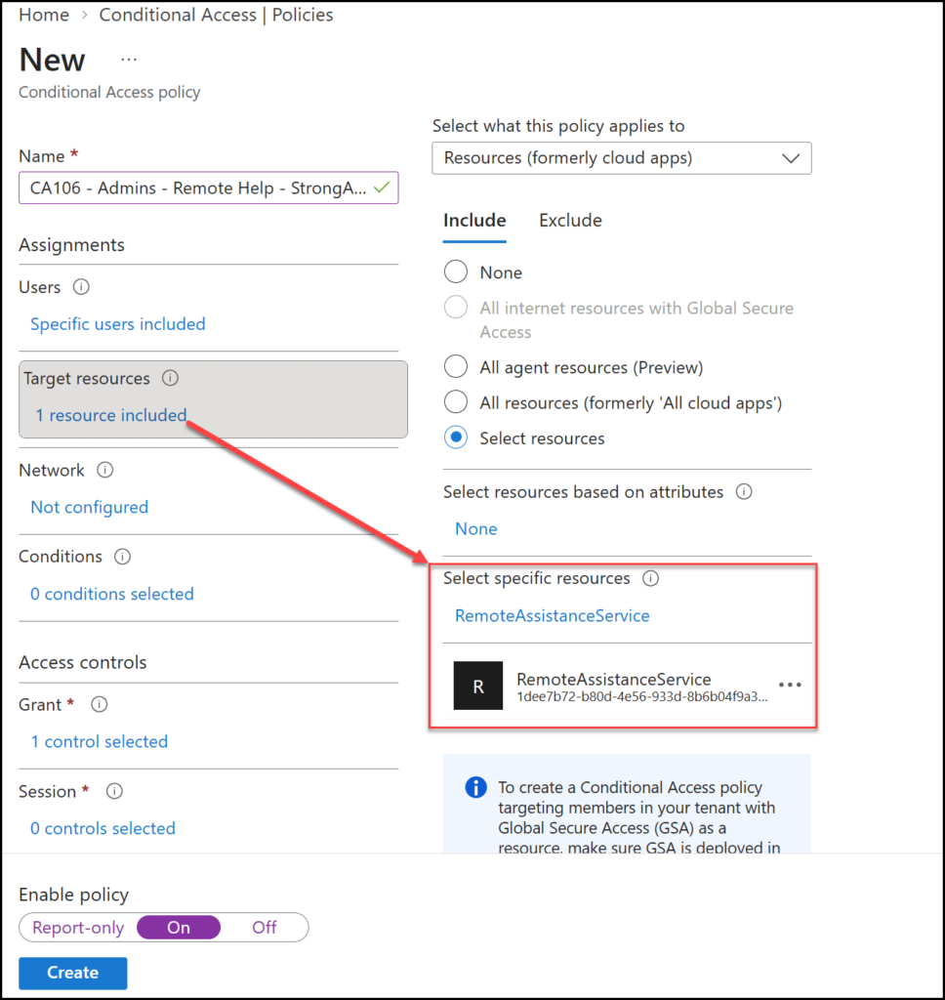
⚠️ If you already have broad CA policies with “All cloud apps” and device compliance requirements, verify they don’t unintentionally block the sharer side or the web app. The Microsoft Learn documentation describes excluding RemoteAssistanceService from policies where needed.
💡 Be aware of the platform scope: Entra ID Conditional Access policies for Remote Help are only supported on Windows and macOS, as stated in the planning considerations on Microsoft Learn. Android sessions – including unattended access to dedicated devices – are not gated by these CA policies, so RBAC remains your primary control for that platform.
Going Further: PIM and Authentication Strengths
For a hardened setup, two more building blocks are worth knowing:
- PIM for Groups: Intune RBAC roles cannot be activated directly through PIM, but the helper group used in the role assignment can be PIM-enabled. Helpers then activate their membership just-in-time, optionally gated by a Conditional Access authentication context requiring a security key.
- Authentication strengths with specific AAGUIDs: If your organization issues specific FIDO2 keys to support staff, an authentication strength can be restricted to those exact hardware models.
Pick one approach – just-in-time group membership or CA on the app sign-in. Both at once tend to hurt the helper experience more than they improve security.
Connecting to Users
There are two main ways to establish a session on Windows, plus the web app for cross-platform scenarios.
Peer-to-Peer With a Security Code
The classic flow, useful when the user calls in and the helper isn’t in the Intune portal:
The helper opens the Remote Help app (or https://aka.ms/rhh), signs in, and clicks Get security code. The 8-digit code is valid for 10 minutes.
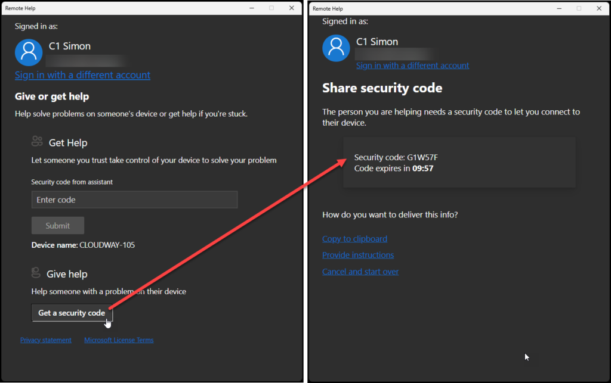
The helper shares the code with the user via the support call or chat.
The sharer opens Remote Help, signs in with their work account, enters the code, and submits.
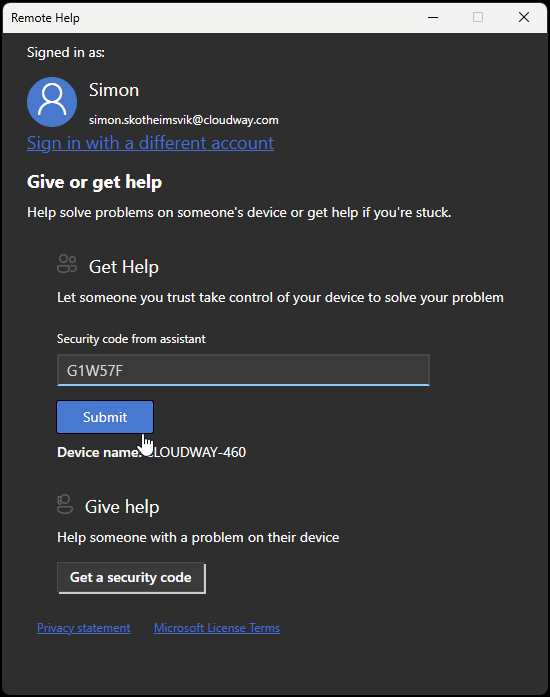
Both parties are shown each other’s organizational identity – full name, job title, company, profile picture, and verified domain. This is the anti-impersonation checkpoint. The helper chooses Take full control or View screen (subject to their RBAC permissions). The sharer clicks Allow or Decline.
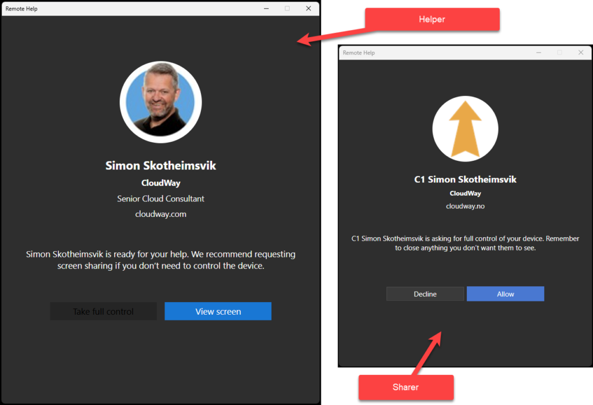
Intune-Portal-to-Peer (Remote Launch)
This is my preferred flow, and honestly the coolest part of the product. No code exchange needed:
In the Intune admin center, navigate to Devices, select the device, and click Remote actions – Begin a remote assistance session > Remote Help > Continue.
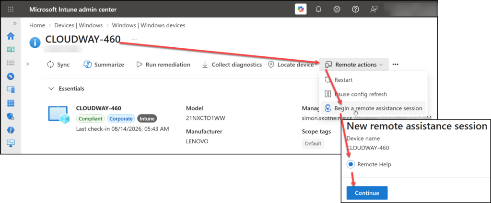
Intune pushes a toast notification to the sharer’s device: “IT wants to connect to your device.” The user clicks the notification, Remote Help launches automatically, and the session code exchange is handled behind the scenes.
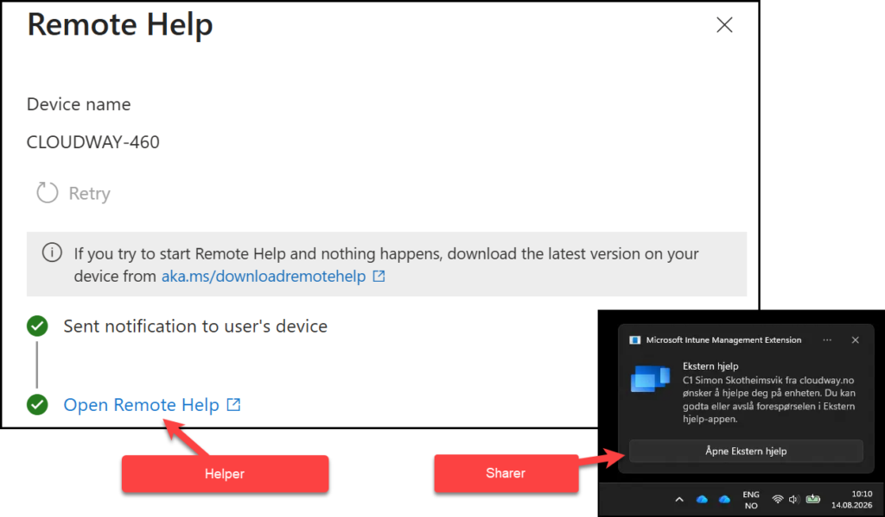
The helper picks the control level and the user approves – same identity verification and consent as before.
Requirements to be aware of: the sharer’s device must be Intune-enrolled with the Intune Management Extension present, and if the user has muted notifications with Do Not Disturb / Focus mode, the toast is hidden.
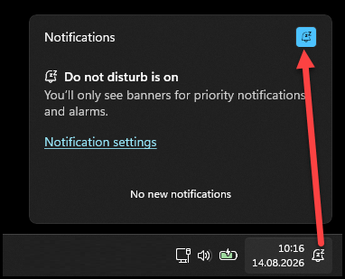
On Azure Virtual Desktop multi-session hosts, avoid Remote Launch entirely – the notification hits all sessions on the host. Ask the AVD user to open Remote Help manually and use the code flow instead.
If the device is not compliant with its assigned policies, the helper is presented with a compliance warning before connecting – a nice Zero Trust touch that reminds support staff to be careful about what they type into an unhealthy device.
💡 If your organization runs ServiceNow, there is a bonus flow here: the Intune ServiceNow integration surfaces a real-time list of the user’s ServiceNow incidents directly in the Intune Troubleshooting pane – and Remote Help sessions can be launched right from there. Helpdesk staff go from ticket to remote session without leaving the console. MVP Gerry Hampson highlights this as one of the key advantages over third-party tools in his post You have Intune Remote Help already, you might as well use it.
The Web App Experience
For macOS sharers without the native app, unenrolled devices, or that one Linux enthusiast in engineering (unsupported, but a supported browser often works):
- Helper starts at https://aka.ms/rhh and gets a security code.
- Sharer browses to https://aka.ms/rh, signs in, accepts the privacy terms, enters the code, and selects which screen to share.
- The helper gets view-only access – enough to guide the user through a fix.
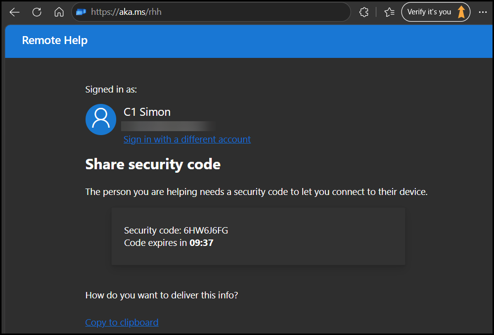
Inside the Session – The Helper Toolbar
Once the session is established, the helper works from a compact toolbar at the top of the session window. It is worth walking your support staff through these tools before day one – a couple of them are easy to miss, and two of them only appear once an Admin Session is active.
| Tool | What it does |
|---|---|
| Request control (1) | Ask the sharer to hand over control of the mouse and keyboard. The sharer gets an Allow / Deny prompt and can cancel control again at any time during the session. |
| Admin Session (2) | Elevate the session so the helper can see and interact with UAC prompts and elevated windows. Requires the Elevation RBAC permission – covered in depth in the next chapter. |
| Laser pointer (3) | Highlight items on the sharer’s screen without taking control. Perfect for the “click that button” moments in view-only sessions. |
| On-screen pen (4) | Draw annotations directly on the shared screen to guide the user visually. |
| Fullscreen (5) | Expand the sharer’s screen to fill the helper’s display. |
| Chat (6) | In-session chat with a continuous message thread. Handy when the phone line is bad or exact strings (URLs, commands) need to be passed accurately. Can be disabled tenant-wide in the Remote Help settings. |
| Task Manager (7) | Opens Task Manager on the sharer’s device. Only available in an Admin Session. |
| Restart machine (8) | Restarts the sharer’s device – and the session can resume after the reboot. Only available in an Admin Session. Great for installations that require a restart. |
| Leave (9) | Ends the session from the helper’s side. |
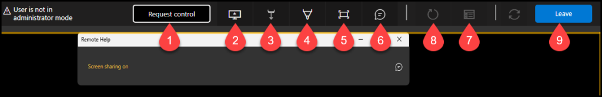
The toolbar also displays the current session mode (user or admin), so the helper always knows which privilege level they are operating at.
The sharer’s experience is deliberately minimal: a slim bar at the top of their screen with an X to end the session immediately and a chat button. The user stays in control – they can terminate the session at any time, which is an important point to include in your end-user communication.
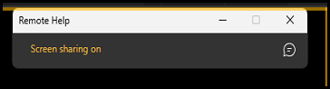
A frame on the shared monitor will remind the end user that sharing is ongoing.
UAC Elevation in Admin Mode
This is where Remote Help beats Quick Assist hands down, and the feature that surprises most customers during demos.
Here is the challenge: when a UAC prompt appears on the sharer’s device, Windows switches to the secure desktop. In a standard Remote Help session, the helper’s view goes black with a pause symbol – the secure desktop is deliberately invisible to screen sharing. The user, who is a standard user without admin rights, is stuck, and so is the helper.
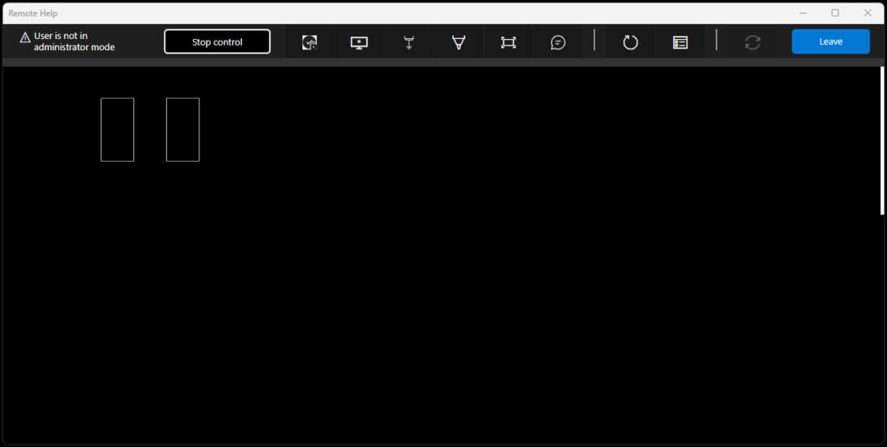
The solution is the Admin Session (elevation). If the helper’s RBAC role includes the Elevation permission:
The helper clicks the Admin Session button (the monitor icon) in the Remote Help toolbar.
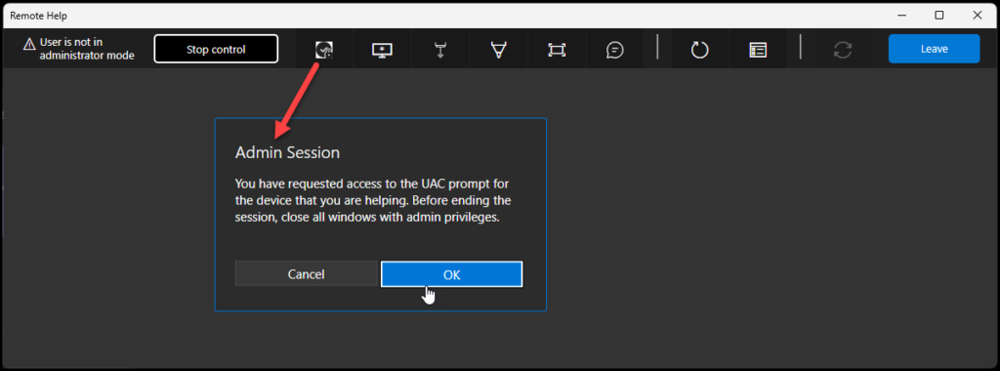
The helper can now enter admin credentials directly, like LAPS – the credentials are never exposed to the end user on the sharer’s side.
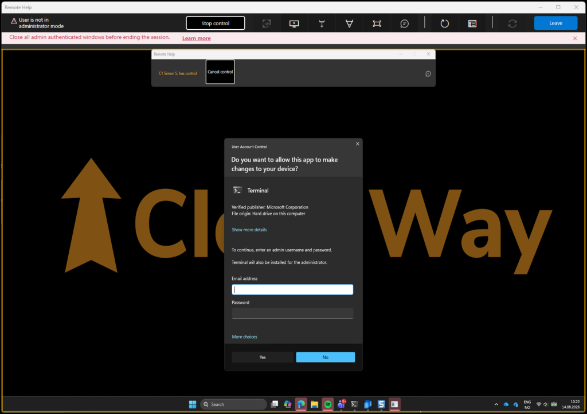
The helper can now see and interact with UAC prompts and elevated windows, and gets extra toolbar tools like Task Manager and Restart machine. After a restart, the session can resume – handy for installations requiring a reboot.
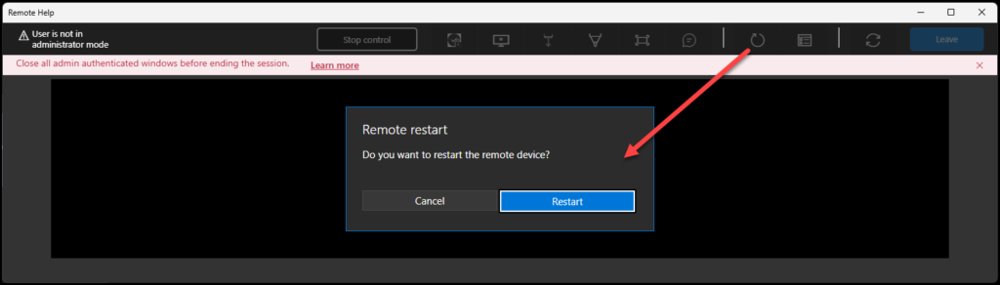
A couple of important guardrails to understand:
- While the Admin Session is active, the helper sees a persistent warning to close all elevated windows before leaving the session.
- If the sharer ends the session while an admin session is still active, the user is signed out immediately. This ensures elevated windows are closed and admin credentials are protected. Brutal, but correct.
Combine the Elevation permission with your Endpoint Privilege Management strategy, and there is very little reason left for standing local admin rights on end-user devices. Remember EPM is also covered by the new E5 offer, and we have several posts on that:
How Fast Is It? Real-World Timings
One recurring piece of feedback I have heard from customers comparing Remote Help to legacy third-party tools is the time it takes to establish a connection. So I did some measurements between two devices in a real environment:
| Step | Time |
|---|---|
| Helpdesk gets a security code to give to the user | ~3 seconds |
| User enters code, helper is prompted to choose full control or view | ~25 seconds |
| User receives the prompt to accept the incoming session | ~9 seconds |
| Session fully established after user accepts | ~2 seconds |
Total: roughly 40 seconds from code generation to a live session. It is noticeably slower than the instant-connect feel of some third-party tools – but you are trading a few seconds for Entra ID authentication, RBAC evaluation, Conditional Access, and compliance checking on every single session. In my book, that’s a fair trade for enterprise support scenarios. Set expectations with your helpdesk accordingly.
Monitoring Usage
Everything is visible right in the Intune admin center under Tenant administration > Remote Help:
The Monitor tab shows active sessions in real time plus summary history.
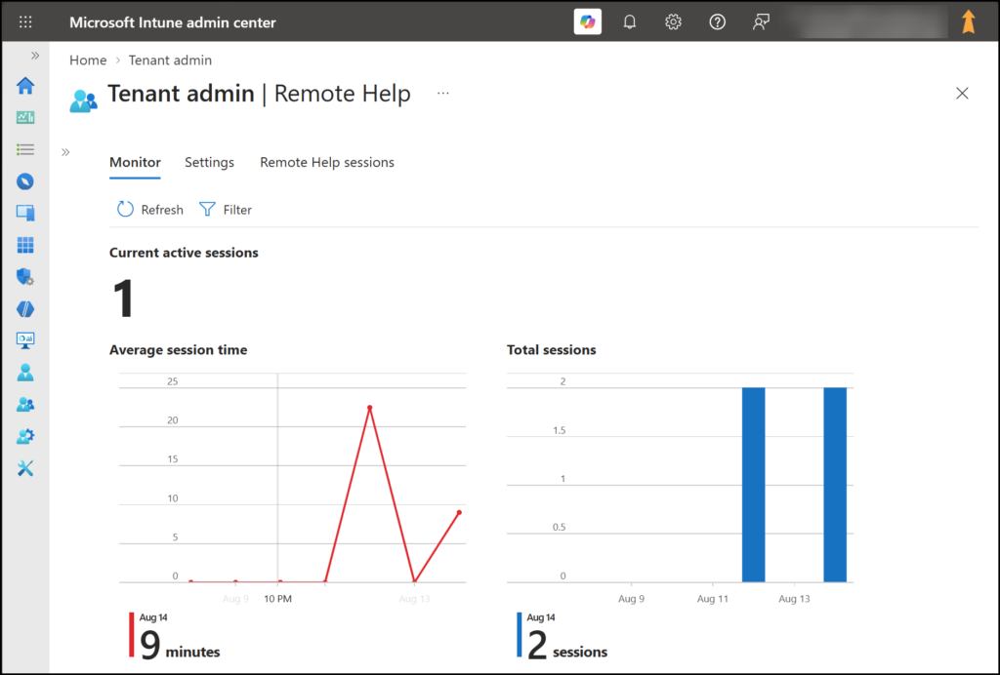
The Remote Help sessions tab lists past sessions with helper identity, sharer identity, device, and session duration. Use the Columns selector for more details.
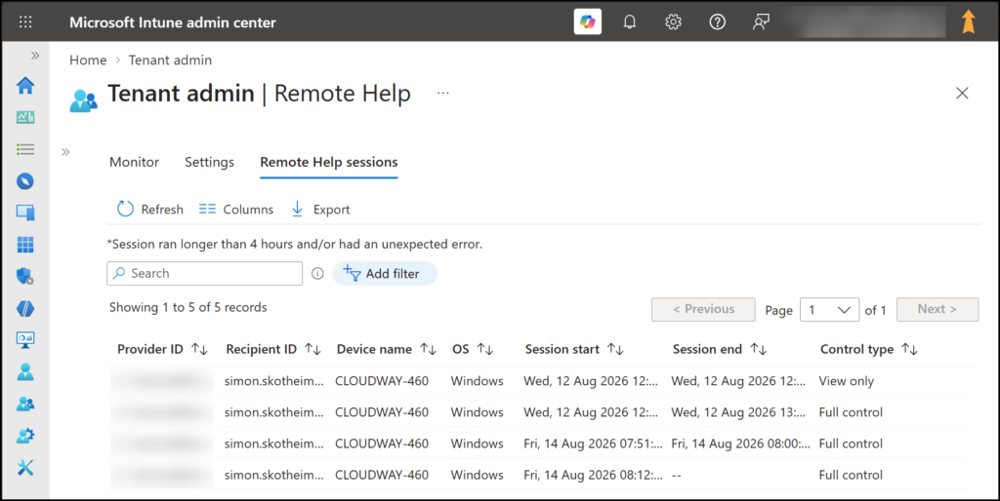
For deeper auditing, go to Tenant administration > Audit logs, where each Remote Help session is logged with:
- Helper and sharer identity
- The device involved
- Session start and end time
- Features used during the session – including whether elevation was invoked
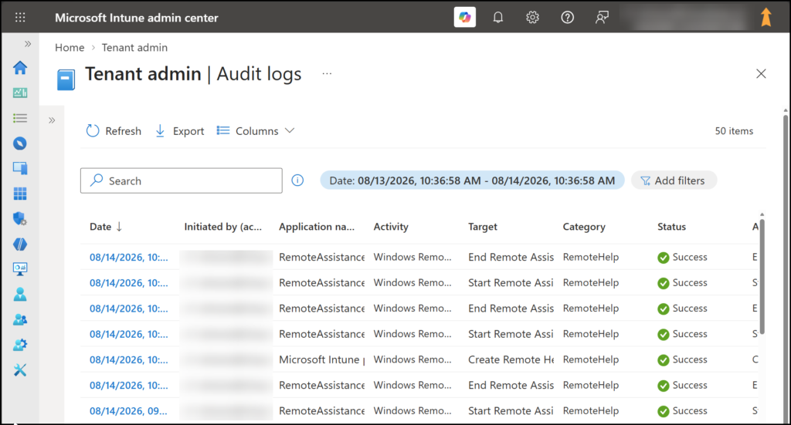
As the proper MSEndpointMgr fan you are, you now also know you can view this data in Intune Guardian.
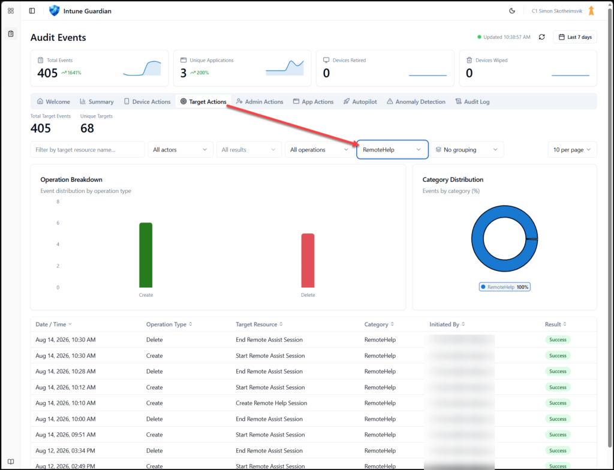
Worth knowing about data handling:
- Microsoft retains session metadata for 30 days. No session recordings, keystrokes, or screen content are stored – Microsoft explicitly states it cannot access session content.
- Session details are also logged locally in the Windows Event Log on both the helper and sharer devices.
- Auditing is limited for unenrolled devices, and Android dedicated devices show “–” for recipient details since they have no user affinity.
From a security operations perspective: keep an eye on the audit logs and Entra ID sign-in logs for the RemoteAssistanceService. Sessions at unusual times or from unexpected helpers should be investigated, and make sure offboarded support staff are removed from the helper groups – removing the RBAC role assignment revokes the capability immediately.
Troubleshooting
The issues I have run into during implementations, and where to look:
| Symptom | Likely cause / fix |
|---|---|
| “Remote Help isn’t enabled for the tenant” right after enabling | License activation delay – new/trial licenses can take 30 minutes to 8 hours to activate. Wait before digging deeper. |
| Helper gets a “missing permissions” notification | The helper lacks the Intune RBAC role, or the target device/user is outside their scope groups/tags. Verify the role assignment. |
| Sessions fail to connect at all | SSL inspection on the proxy is breaking the TLS handshake. Bypass inspection for the Remote Help endpoints. Also verify outbound traffic on port 443 to the documented endpoints. |
| Remote Launch notification never appears on the user’s device | User has Do Not Disturb / Focus mode enabled – the toast is muted. Fall back to the security code flow. Also check that the Intune Management Extension is healthy on the device. Optional reliability updates: KB5028245 (Win11) / KB5029331 (Win10). |
| Notification hits the wrong user on AVD | Multi-session hosts broadcast the notification to all sessions. Don’t use Remote Launch against AVD; use the code flow. |
| Helper’s screen goes black with a pause symbol | The UAC secure desktop. Start an Admin Session (requires Elevation permission), or adjust the UAC UIAccess policy. |
| Helper CA policy blocks the session | Check Entra ID sign-in logs for the RemoteAssistanceService app to see which CA policy fired. |
| Disconnects and session errors | Check the Windows Event Viewer on the sharer’s device – Remote Help logs session details and errors locally. |
| Connection feels slow | It is by design – identity, RBAC, and compliance are validated per session. See timing section above; set helpdesk expectations. |
Summary
Remote Help is not new, but its inclusion in Microsoft 365 E3/E5 completely changes the business case. If you are paying for a third-party remote support tool today, you now have an alternative that is already licensed, natively integrated in Intune, enforces Entra ID identity on both ends of every session, respects Conditional Access, offers RBAC-scoped least privilege for helpers including controlled UAC elevation, and logs every session for 30 days – all within your own tenant boundary.
The setup is genuinely quick: enable the service, push the app from the Enterprise App Catalog, create a scoped RBAC role, register the service principal, and put a Conditional Access policy on top. Half a day of work for a properly secured deployment.
Is it perfect? No. Cross-tenant support is not possible, connection establishment takes longer than the legacy tools, and cross-platform helpers are limited to the web app. But for organizations living in the Microsoft ecosystem, the integration advantages are hard to argue with. You have it already – you might as well use it.
FAQ
Who needs a Remote Help license?
Everyone who interacts with the service – both helpers (support staff) and sharers (end users), as documented in the Remote Help prerequisites on Microsoft Learn. Assign licenses through a group and reuse that group in your RBAC role assignment.
Can I support users in another tenant?
No. Remote Help is strictly same-tenant. Both helper and sharer must sign in with Entra ID accounts from the same organization. MSPs supporting multiple customer tenants need helper accounts in each tenant.
What is the difference between Remote Help and Quick Assist?
Quick Assist is free and built into Windows but has no identity verification beyond a code, no RBAC, no reporting, and the helper cannot see UAC prompts.
Remote Help adds Entra ID authentication for both parties, RBAC-scoped permissions, Conditional Access, compliance warnings, UAC elevation, and full session auditing in Intune.
How do I control which helpers can elevate to admin?
Through the Intune RBAC permission model. Create a custom role and only enable the Elevation permission for the role assigned to your senior support tier. Enabling Elevation implicitly grants Take full control and View screen.
Does Microsoft record the sessions?
No. Microsoft stores session metadata (identities, device, times, features used) for 30 days, but no recordings, keystrokes, or screen content. Sessions cannot be recorded through Remote Help.
Why can’t the helper see the UAC prompt?
UAC prompts appear on the secure desktop, which is invisible to screen sharing – the helper’s view goes black with a pause symbol. The helper must start an Admin Session (requires the Elevation RBAC permission) to view and interact with elevated windows.
Does Remote Help work on unenrolled devices?
Yes, optionally. Enable Allow Remote Help to unenrolled devices in the tenant settings. Be aware that audit data is reduced for unenrolled sessions, and Remote Launch from the Intune portal requires enrollment.
The 8-pin security code is to long – my app accepts 6 digits?
The 8-pin security code is for the web app experience only. You can’t do a remote control from the web app experience to the remote help client on Windows.